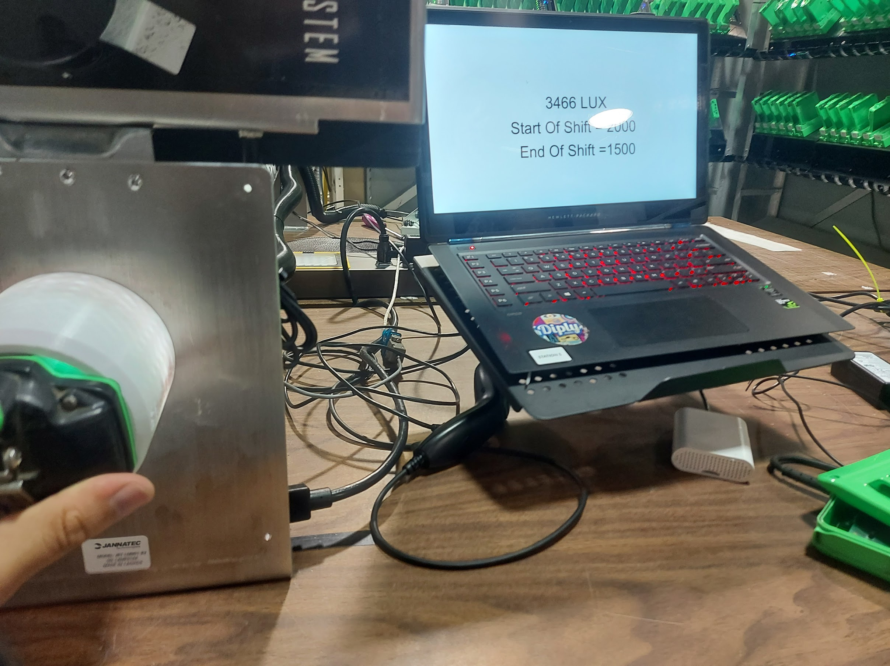

My Passion for Programming
I started programming in university, where I learned the basics of various languages and tools. Since then, my passion has only grown, and I've had the opportunity to work on various projects. I feel comfortable with several programming languages, including Java, C#, C++, Python, and Arduino. These tools have allowed me to create projects ranging from simple games to technical applications.

This code is based on the infinite monkey theorem, which essentially states that a monkey with infinite time and a typewriter would eventually write the best works of Shakespeare. This code takes any text typed and continuously tries random keystrokes until it matches.

An Arduino-based lux meter with a visual display for the end user that shows the current lux as well as the expected value.

It's obvious, but I want to mention it, this website was also created by me.